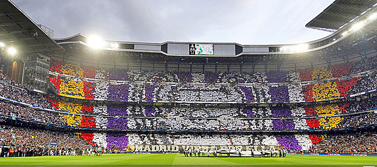
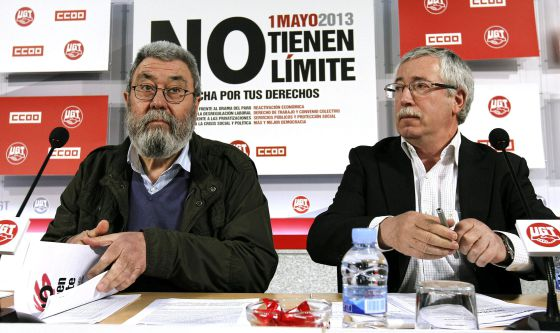

FÚTBOL / REAL MADRID
El Bernabeú sí remontó
Juan I. García-Ochoa 01/05/13 - 12:15.
El Real Madrid se quedó a un centímetro de conquistar el Everest, pero no se puede decir que fuera por falta de aliento. Porque la afición del equipo blanco, ayer sí, siguió al pie de la letra el manual de las remontadas.

El Bernabéu fue una caldera y la hinchada empujó al equipo desde mucho antes de que empezara el partido. Eran las seis y media de la tarde y la calle Concha Espina estaba tomada por 7.000 aficionados que creían en la remontada. Un grito de guerra a la espera del autobús de los jugadores: “¡Sí, se puede!”.
|
MADRID / CASO BÁRCENAS
Ruz imputa a 8 empresarios donantes del PP citados en los papeles de Bárcenas
Europa Press | Madrid. Actualizado martes 30/04/2013 21:46 horas
El juez Pablo Ruz ha imputado a ocho empresarios que aparecen recogidos como donantes del PP en la en la contabilidad B atribuida a su ex tesorero Luis Bárcenas. Entre ellos, destacan el presidente de la constructora OHL, Juan Miguel Villar Mir, y el ex presidente de Sacyr Vallehermoso, Luis del Rivero.
El magistrado de la Audiencia Nacional ha dictado una providencia donde les cita para prestar declaración los próximos 27 y 29 de mayo.
|
JAÉN
«La situación actual de la sanidad jienense es la peor que he vivido en mi carrera»
01.05.13 - 00:31 - CARMEN CABRERA | JAÉN.
Manuel Pérez es vicepresidente del sector de sanidad en el sindicato Csif de Jaén. Lleva trabajando 31 años en la sanidad pública y lo ha hecho en cuatro hospitales diferentes: Complejo Hospitalario de Jaén; Hospital San Agustín, de Linares; Hospital Valle de los Pedroches, de Córdoba; y Hospital Princesa de España (antes de la fusión de dicho hospital con el hospital Ciudad de Jaén para constituir el Complejo Hospitalario en 2002).

Se cumple un año de la publicación en el BOE del Real Decreto ley 16/2012 de abril de medidas urgentes para garantizar la sostenibilidad del Sistema Nacional de Salud.
|
|
GOBIERNO
Rajoy ofrece más ajustes a Bruselas
La negociación entre España y Bruselas para lograr más tiempo que permita cuadrar las cuentas públicas —el techo de déficit pasa del 4,5% al 6,3% este año— comprendía contrapartidas para el Gobierno de Mariano Rajoy. El déficit es el objetivo primordial.
Por eso, el Gobierno ha incluido en el Programa de Estabilidad de 2013-2016 un nuevo paquete de ajustes para este año valorados en unos 3.000 millones, una cifra adelantada por el presidente el pasado domingo en Granada pero sin detallar las medidas.
Leer más...
|
DIA DEL TRABAJO
Los sindicatos reclaman un gran pacto ante la emergencia nacional del paro
Más de 6,2 millones de parados llevan a España a una situación de "emergencia nacional", creen los sindicatos.

Por eso, este miércoles, aprovechando el Primero de Mayo, reclaman "un gran acuerdo para cambiar el modelo económico, por el empleo y la protección", en palabras del líder de CC OO, Ignacio Fernández Toxo. Entre las cosas que tendría que contar ese pacto estaría un plan de choque para estimular la actividad económica.
|
CAZORLA
Fito y Fitipaldis y Bettye LaVette, primeras confirmaciones del BluesCazorla 2013
A ellos se unen otros artistas como Los Coronas, Curtis Salgado, Chris Kane, Texas Scrath, Anson Thundergerg, Nine Below Zero , Ian Segal, Mighty Calacas, Los Deltonos y la primera banda confirmada del festival George Thorogood and Destroyer.  Cazorla ya huele a blues. Las primeras confirmaciones ya están en marcha y Cazorla va a poder disfrutar de dos grandes voces del panorama nacional e internacional.
Como viene ocurriendo tras varios años habrá un gran artista del panorama nacional. Loquillo, Rosendo, M-Clan y Raimundo Amador ya han pisado las tablas del escenario de la plaza de toros, este año es el turno de la mítica banda Fito y Fitipaldis.
Leer más... |
CASA REAL
El Rey reaparece en público en el partido de fútbol Madrid-Borussia
El Rey ha reaparecido en un acto público en el estadio Santiago Bernabéu, donde ha presenciado en el palco de autoridades la semifinal de Liga de Campeones entre el Real Madrid y el Borussia de Dortmund.
La llegada del monarca a su localidad no ha sido anunciada por megafonía ni ha sonado el himno de España.
Ha sido la primera actividad pública del monarca tras su doble operación de hernia del pasado 3 de marzo. Ya la semana pasada retomó las audiencias en Zarzuela, pero ésta ha sido la primera ocasión en la que ciudadanos y periodistas han podido verle fuera del Palacio de la Zarzuela.
|
|
|